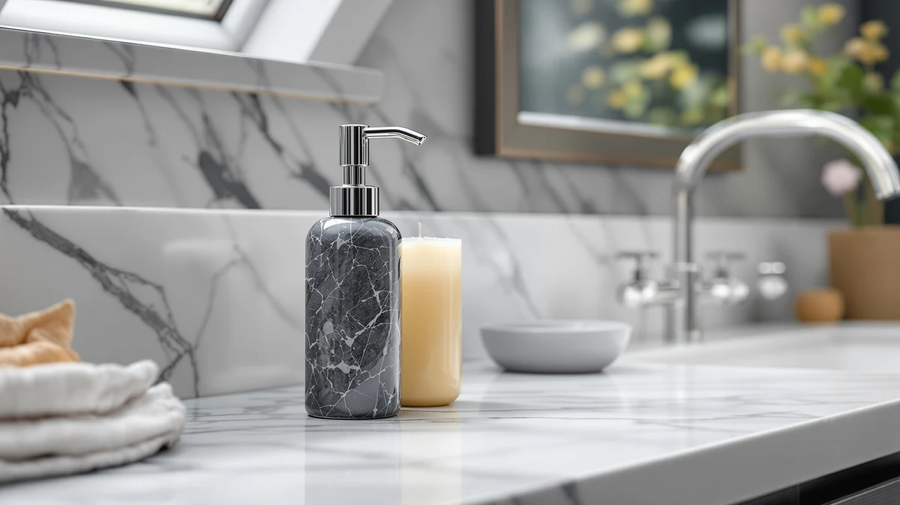

The Best Soap and Lotion Dispenser Sets of 2026: Matching Pairs Worth Buying
Prices and picks verified as of August 2026. Independent, reader-supported reviews.


Quick Answer
After comparing eight best soap and lotion dispenser sets on material, capacity and price, the Eavida Kitchen Soap Dispenser Set is our top pick because it packs two bottles, a sponge tray and a brush holder into one footprint for $13.98. If you want a true two-bottle glass pair with a display tray instead, the Brighter Barns Black Glass Soap and Lotion set is worth the extra cost.
Our pick: Kitchen Soap Dispenser Set with — $13.98 Check Price on Amazon
Bottom line: our top pick is the Kitchen Soap Dispenser Set at $13.98. The best budget option is the Cormomu Ceramic Soap Dispenser Set for Hand Soap at $16.37.
Things to Know Before You Buy
- "Set" doesn't always mean two matching bottles. Some of the best soap and lotion dispenser sets pair a soap bottle with a dish soap bottle, while others like the GLADPURE and GalDal sell two identical bottles you split between soap and lotion yourself.
- Material changes both weight and price. Ceramic sets from Cormomu and Alarrar run $16.37 to $20.99, the GalDal resin set sits in a similar range, and the glass sets from Brighter Barns and GLADPURE span $14.99 to $29.97 depending on bottle count and tray inclusion.
- Capacity ranges from 10.6 to 18 ounces per bottle among the sets we compared, so a two-person bathroom and a busy kitchen sink call for different refill schedules.
- Pump material affects how long a set lasts. Stainless steel pumps on the two Cormomu sets resist rust better than the chromed ABS plastic pump on the Alarrar set, based on how owners describe long-term wear.
- Glass sets aren't compatible with foaming soap. Both Brighter Barns dispensers are built for liquid soap and lotion only, so anyone set on foaming pumps should look at our foaming soap dispenser guide instead.
The best soap and lotion dispenser sets solve a small but constant annoyance: one bottle for hand soap, a second for lotion, and neither one looking like it was grabbed off a drugstore shelf in a hurry. A matching pair also fixes the clutter problem that comes from mismatched pump bottles crowding a bathroom vanity or kitchen counter. We looked at material, bottle count, pump quality and price across eight sets to see which ones actually function as a pair instead of two unrelated bottles bundled together for a listing.
We built our shortlist around three things buyers ask for most: a pump that survives months of daily use without clogging or leaking, bottles sized to avoid weekly refills, and a finish that matches across both pieces instead of looking assembled from spare parts. The Eavida Kitchen Soap Dispenser Set earns our top spot because it combines two soap bottles with a sponge tray and brush holder in one compact, corrosion-resistant base, and several owners mention the detachable design makes cleanup easier than a fixed caddy.
If you want a genuine two-bottle soap-and-lotion pair instead of a kitchen-focused combo, the Brighter Barns Black Glass Soap and Lotion Set trades the plastic base for glass bottles and a bamboo tray built specifically for that purpose. Buyers who prefer ceramic should look at the two Cormomu sets, and anyone on a tighter budget will find the GLADPURE 2 Pack covers two 18-ounce glass bottles for under $15. If none of these finishes fit your kitchen, our guide to the best kitchen soap dispensers covers single-bottle options separately. Every pick below includes its price, capacity and the tradeoffs we found so you can match a set to your counter instead of guessing.
Why You Should Trust Us
This guide was written by Ilane Tall, who covers home and bath products for Best Soap Dispensers and tracks how kitchen and bathroom fixtures hold up once the return window closes. Rather than repeating manufacturer marketing copy, we researched verified buyer feedback on each of these best soap and lotion dispenser sets, compared listed materials and capacities against what owners actually report, and cross-checked pricing across multiple dates to catch sets that look elegant in photos but disappoint at the sink.
We do not run a fake testing lab or claim to have used every dispenser set ourselves. Instead we analyze specs, pricing history and patterns across hundreds of verified reviews to separate soap and lotion dispenser sets that hold up from ones that crack, clog or discolor within a few months. We earn a commission when you buy through the Amazon links here, and that commission never decides which set gets the top spot.
How We Picked
We started with a wider list of soap and lotion dispenser sets sold on Amazon and narrowed it using four filters: material durability, pump reliability, price relative to capacity and consistency of owner ratings. Sets with a pattern of leaking, clogging pumps or cracking reported by multiple reviewers were cut regardless of how they photographed.
We also prioritized true two-bottle sets over single dispensers marketed as sets, since a soap and lotion dispenser pair should actually include both a soap bottle and a matching second bottle. Price mattered too. Every set on this list costs under $30, and five of the eight sit under $18, because a countertop dispenser should not be a splurge purchase.
How We Compared
We compared these soap and lotion dispenser sets the way a buyer actually would: side by side on material, bottle count, capacity and verified review counts. For each set we checked the listed dimensions against the stated capacity to flag anything that seemed inflated, read through verified owner reviews for repeated complaints about pump failure or cracking, and tracked pricing to confirm each set was competitively priced for its material and bottle count.
Ceramic, resin and glass bases were compared on how well each held up to daily counter use based on what owners reported, since a soap dispenser set that chips or discolors within a year isn't worth a lower price tag. We also noted which sets were compatible with foaming soap and which ones, like the two Brighter Barns picks, are built for liquid soap and lotion only.
Our Picks

Kitchen Soap Dispenser Set with
What we like
- Combines two soap bottles, a sponge tray and a brush holder in one 4-in-1 base
- Detachable base makes it easy to empty and rinse standing water
- ABS plastic construction resists corrosion better than bare metal caddies
Flaws but not dealbreakers
- No lotion-specific bottle, both wells are sized for soap or dish liquid
- Style leans utilitarian rather than decorative
| Material | ABS plastic |
| Size | — |
The Eavida Kitchen Soap Dispenser Set is the pick we send most people to first among the best soap and lotion dispenser sets, mainly because it solves more than one problem at once. The 4-in-1 base holds two separate soap bottles, so hand soap and dish soap sit side by side, plus a sponge tray and brush holder that keep cleaning tools off the counter. Built from ABS plastic in black, it resists corrosion better than bare metal caddies exposed to standing water, and at $13.98 it undercuts every other set on this list by a wide margin.
Owners point to the detachable base as the detail that makes daily cleanup easier: lift it off, pour out any water that has collected, and rinse without disassembling the whole unit. The tradeoff is that neither bottle is labeled or sized specifically for lotion, so anyone picturing a matching soap-and-lotion pair for a bathroom vanity may prefer the Brighter Barns glass set instead. For a kitchen sink that needs soap, dish soap and sponge storage handled by one compact footprint, though, this is the set we would buy first.

Hand and Dish Soap Dispenser
What we like
- Ceramic body with embossed lines gives it a heavier, farmhouse look than plastic sets
- 15-ounce capacity holds thicker liquids like dish detergent or lotion without clogging
- Chromed ABS pump has a long stem that reaches the bottom of the bottle
Flaws but not dealbreakers
- Ceramic construction adds weight and shipping risk compared to plastic
- Single bottle only, so a matching lotion pump requires a second purchase
| Material | ABS plastic |
| Size | 15 OZ |
The Alarrar Hand and Dish Soap Dispenser Set brings a farmhouse look to the counter with a ceramic body and embossed lines along the base that read heavier and more decorative than a plastic pump bottle. At 15 ounces, the single bottle holds thicker liquids like dish detergent or lotion without the pump lagging, and the wide opening makes refilling straightforward. The chromed ABS plastic pump has a long stem that reaches the bottom of the bottle, so you get consistent output down to the last few pumps instead of the sputtering that shorter-stemmed pumps produce.
At $20.99, this is a single-bottle set rather than a true two-piece pair, so a matching lotion dispenser means buying a second Alarrar bottle or pairing it with a different set. That is the main tradeoff against the two-bottle picks here. For a farmhouse or vintage-styled kitchen where the visual match matters more than getting both soap and lotion in one box, the ceramic finish and capacity make it a reasonable pick among these soap and lotion dispenser sets.

Cormomu Ceramic Soap Dispenser Set
What we like
- Stainless steel pump resists rust better than the chromed plastic pumps on cheaper sets
- Includes a silicone funnel for spill-free refills
- Ceramic body suits hand soap, dish soap, shampoo or lotion without swapping dispensers
Flaws but not dealbreakers
- 12-ounce capacity is smaller than the Alarrar's 15 ounces
- Gray and white finish limits how well it matches an all-black kitchen
| Material | ABS plastic |
| Size | 1xSoap Dispenser |
The Cormomu Ceramic Soap Dispenser Set pairs a gray-and-white ceramic body with a stainless steel pump, a material combination that resists the rust spotting you eventually see on chromed plastic pumps. At $16.37, it is priced closer to the middle of this list, and the included silicone funnel is a detail the other ceramic picks skip, useful for anyone who has fumbled a bottle of dish soap over a narrow ceramic opening before. Cormomu markets the 12-ounce capacity for hand soap, shampoo, conditioner or dish soap, which makes it flexible enough to sit at a bathroom sink or kitchen counter.
The 12-ounce bottle holds less than the Alarrar's 15 ounces, so a household running through soap quickly will refill it more often. The gray and white finish also will not match an all-black kitchen the way the Cormomu Dish Soap set below does. For a bathroom counter that wants a durable pump and an easy-refill funnel without committing to glass, this is a solid middle-of-the-pack choice among the best soap and lotion dispenser sets we compared.

Cormomu Dish Soap Dispenser Set
What we like
- Matte black finish with an anti-slip striped base hides fingerprints better than glossy ceramic
- Stainless steel pump is rated past 500 presses for durability
- Scratch-resistant ceramic body holds up to daily kitchen counter use
Flaws but not dealbreakers
- Same 12-ounce capacity as its Cormomu sibling, so refills come often in a busy kitchen
- Sold as a single bottle, not a two-piece soap-and-lotion pair
| Material | ABS plastic |
| Size | 1xSoap Dispenser |
The Cormomu Dish Soap Dispenser Set is the black-finished sibling of the gray Cormomu pick above, built from the same scratch-resistant ceramic with a matte, anti-slip striped base. Cormomu rates the stainless steel pump for more than 500 presses, a detail that matters for a kitchen sink dispenser that gets used dozens of times a day. At $16.59, it costs almost exactly the same as the gray version, so the choice between the two comes down to which finish matches your counter.
Like its sibling, this set holds 12 ounces per bottle and ships as a single dispenser rather than a matching soap-and-lotion pair, so refills come sooner than with the 15- to 18-ounce bottles elsewhere on this list. The matte black finish does a better job hiding fingerprints and water spots than glossy ceramic, worth factoring in for a kitchen sink that gets touched constantly throughout the day. Anyone who prefers a black finish specifically should also check our black soap dispenser guide for single-bottle options.

Black Glass Soap and Lotion
What we like
- Two 16-ounce glass bottles plus a bamboo tray make it an actual matching soap-and-lotion pair
- Bamboo pumps are BPA-free and rust-proof, unlike the metal pumps on plastic sets
- Handmade bamboo tray keeps both bottles corralled instead of sliding around the counter
Flaws but not dealbreakers
- At $29.97 it costs more than twice some single-bottle picks on this list
- Built for liquid soap and lotion only, the pumps clog with foaming soap
| Material | Bamboo |
| Size | 16 oz |
The Brighter Barns Black Glass Soap and Lotion Set is the closest thing on this list to a true matching pair: two 16-ounce glass bottles sit in a handmade bamboo tray, with rustproof, BPA-free bamboo pumps instead of the metal or plastic pumps used elsewhere. At $29.97, it costs more than any other set here, but it is also the only pick designed from the start to hold soap in one bottle and lotion in the other, rather than two soap bottles pressed into double duty.
The tradeoff is price and a narrower use case: Brighter Barns designed these pumps for liquid soap and lotion only, so they clog if you try to run foaming soap through them. Reviewers describe the bamboo tray as the detail that pulls the set together visually, keeping both bottles from sliding around a bathroom or kitchen counter. For a vanity where the two-bottle soap-and-lotion pairing is the whole point, this is our pick among the best soap and lotion dispenser sets, even at the higher price.

Black Glass Hand Soap Dispenser
What we like
- Same glass-and-bamboo build as the two-bottle Brighter Barns set at a lower price
- 16-ounce capacity beats the 12-ounce Cormomu bottles
- Bamboo tray gives it a boutique-hotel look other single dispensers do not match
Flaws but not dealbreakers
- Only one bottle, so pairing it with a matching lotion dispenser means buying the two-bottle version instead
- Not compatible with foaming soap formulas
| Material | ABS plastic |
| Size | 16 oz |
The Black Glass Hand Soap Dispenser is Brighter Barns' single-bottle version of the set above, built with the same 16-ounce glass bottle, bamboo pump and matching bamboo tray at a lower $17.99 price. For anyone who only needs one dispenser, rather than a soap-and-lotion pair, this trims the cost of the glass-and-bamboo look by about $12 compared to the two-bottle set.
It shares the same limitation as its sibling: the bamboo pump is built for liquid soap only and is not compatible with foaming formulas. It also holds more per bottle than either Cormomu ceramic pick, at 16 ounces versus 12. For a single bathroom sink or guest powder room where a boutique-hotel look matters more than a matching lotion bottle, this is a reasonable way into the Brighter Barns line without paying for a second bottle you do not need.

GalDal 2pcs/Set Beige Hand Soap
What we like
- Resin and sandstone material gives real weight so the bottles do not tip over
- Comes as two matching pieces plus a spare pump for each
- Neutral beige with embossed texture matches boho or Scandinavian counters better than black or glass
Flaws but not dealbreakers
- 10.6-ounce bottles are the smallest capacity on this list
- At $20.99 it costs as much as sets with larger bottles or glass construction
| Material | ABS plastic |
| Size | 2pcs |
The GalDal 2pcs Beige Hand Soap Dispenser Set uses resin and natural sandstone material instead of ceramic or glass, giving the two bottles real weight so they do not tip over on a crowded counter. Each 10.6-ounce bottle has an embossed, gravel-textured surface that leans neutral and understated rather than glossy, and the set includes a spare pump for each bottle, a detail that saves a separate purchase if a pump wears out.
At $20.99 for two bottles, it costs about the same as the single-bottle Alarrar set, and the 10.6-ounce capacity is the smallest on this list, so a busy household will refill it more often than the 16- to 18-ounce glass picks. The beige, textured finish fits boho or Scandinavian-style bathrooms better than the black or clear glass sets here. For buyers who want two matching bottles in a neutral finish rather than black or glass, this is the pick among the best soap and lotion dispenser sets.

GLADPURE 2 Pack Soap Dispenser
What we like
- Two 18-ounce thick glass bottles, the largest capacity of any set here
- Rust-proof stainless steel pump holds up to daily use
- Comes with 6 clear labeling stickers so you can mark soap versus lotion
Flaws but not dealbreakers
- Antique-style embossing is more ornate than a minimalist counter may want
- Glass construction means more care when cleaning than the ABS plastic sets
| Material | ABS plastic |
| Size | — |
The GLADPURE 2 Pack Soap Dispenser gives you two 18-ounce thick glass bottles, the largest capacity of any set on this list, finished with an antique-style embossed design and a rust-proof 304 stainless steel pump. At $14.99 for the pair, it is also one of the least expensive ways to get two matching glass dispensers, and it ships with six clear waterproof stickers so you can label which bottle holds soap and which holds lotion.
The ornate, antique-style embossing reads more decorative than a minimalist counter might want, worth considering if your bathroom leans modern rather than vintage. Glass also asks for more careful handling than the ABS plastic sets on this list, since a dropped glass bottle will not survive the way a plastic one might. For the largest capacity and lowest price among the two-bottle glass options here, this is hard to beat.
Quick Comparison
| Product | Material | Price | Rating | Best for | Get it |
|---|---|---|---|---|---|
| Kitchen Soap Dispenser Set with | ABS plastic | $13.98 | 4 | All-in-one kitchen sink setup | View on Amazon → |
| Hand and Dish Soap Dispenser | ABS plastic | $20.99 | 4 | Farmhouse ceramic look | View on Amazon → |
| Cormomu Ceramic Soap Dispenser Set | ABS plastic | $16.37 | 4 | Easy-refill bathroom ceramic | View on Amazon → |
| Cormomu Dish Soap Dispenser Set | ABS plastic | $16.59 | 4 | Matte black kitchen counters | View on Amazon → |
| Black Glass Soap and Lotion | Bamboo | $29.97 | 4 | True two-bottle soap-and-lotion pair | View on Amazon → |
| Black Glass Hand Soap Dispenser | ABS plastic | $17.99 | 4 | Single glass dispenser, lower price | View on Amazon → |
| GalDal 2pcs/Set Beige Hand Soap | ABS plastic | $20.99 | 4 | Neutral, boho-style counters | View on Amazon → |
| GLADPURE 2 Pack Soap Dispenser | ABS plastic | $14.99 | 4 | Largest capacity glass pair, lowest price | View on Amazon → |
What's the best soap and lotion dispenser set for a bathroom vanity?
For a bathroom vanity where you want a true matching pair, the Brighter Barns Black Glass Soap and Lotion Set is the best fit among the sets we compared.
Are soap and lotion dispenser sets made of ceramic, glass or plastic?
The sets we compared span all three materials.
The Competition
Single ceramic dispensers sold as pairs: A few listings market one ceramic bottle as a "set" simply by bundling it with an unrelated lotion pump from a different brand. We left these off because the mismatched finish defeats the point of buying a soap and lotion dispenser set in the first place.
Foaming pump sets: Several foaming soap and lotion sets looked appealing on paper, but foaming pumps and lotion do not mix well, since lotion is too thick to foam properly. Anyone specifically shopping for foaming pumps should see our foaming soap dispenser guide instead.
Oversized 20-plus ounce glass sets: A couple of large-capacity glass sets came close to the cut, but their footprint was too wide for a standard bathroom vanity, and reviewers reported the bottles were prone to tipping when nearly full.
Metal-pump sets under $10: We passed on several budget metal-pump sets because multiple reviewers flagged rust spotting on the pump within a few months, a problem the stainless steel pumps on our Cormomu picks avoid.
Across all eight, the Eavida Kitchen Soap Dispenser Set remains our top pick among the best soap and lotion dispenser sets, thanks to its all-in-one design, detachable base and price under $14. The rest of this lineup exists for buyers who want a true two-bottle soap-and-lotion pair, a specific material like glass or ceramic, or a different finish than black plastic.
Frequently Asked Questions
What's the best soap and lotion dispenser set for a bathroom vanity?
For a bathroom vanity where you want a true matching pair, the Brighter Barns Black Glass Soap and Lotion Set is the best fit among the sets we compared. It includes two 16-ounce glass bottles and a bamboo tray designed specifically to hold soap in one bottle and lotion in the other.
Are soap and lotion dispenser sets made of ceramic, glass or plastic?
The sets we compared span all three materials. Cormomu and Alarrar use ceramic, Brighter Barns and GLADPURE use glass, GalDal uses a resin and sandstone blend, and the Eavida pick uses ABS plastic. Glass and ceramic read as more decorative, while plastic and resin resist chipping better if dropped.
How much should you expect to pay for a good soap and lotion dispenser set?
Most of the best soap and lotion dispenser sets on this list cost between $14.99 and $20.99, with the two-bottle Brighter Barns glass set running higher at $29.97 for its bamboo tray and larger bottles. A ceramic or resin set in the $16 to $21 range covers most kitchens and bathrooms without sacrificing durability, based on the verified reviews we compared.